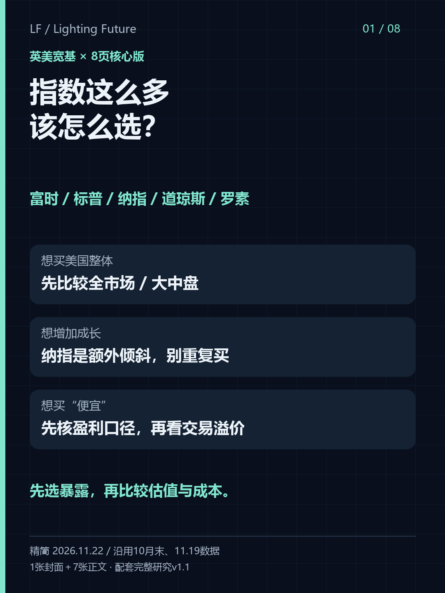
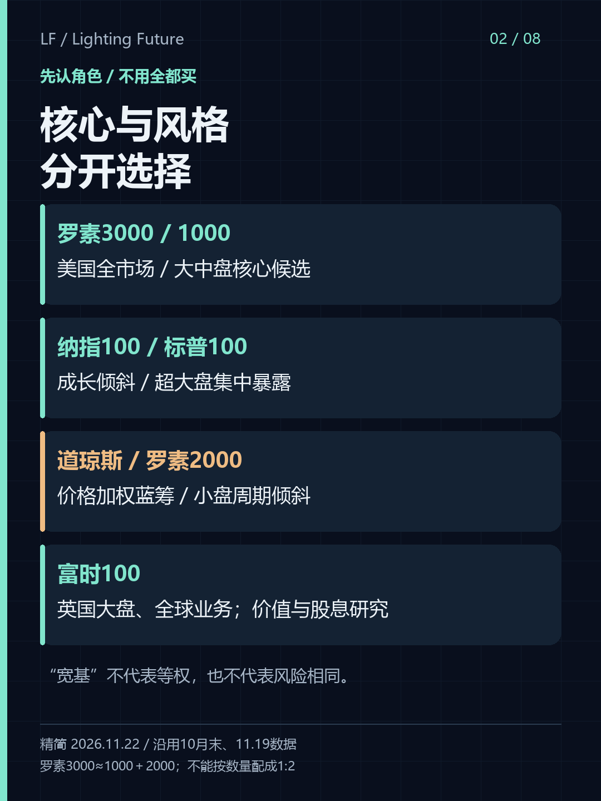
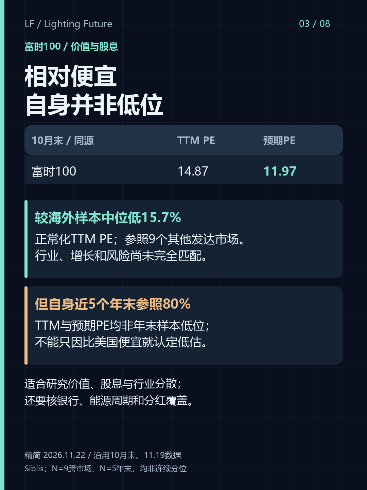
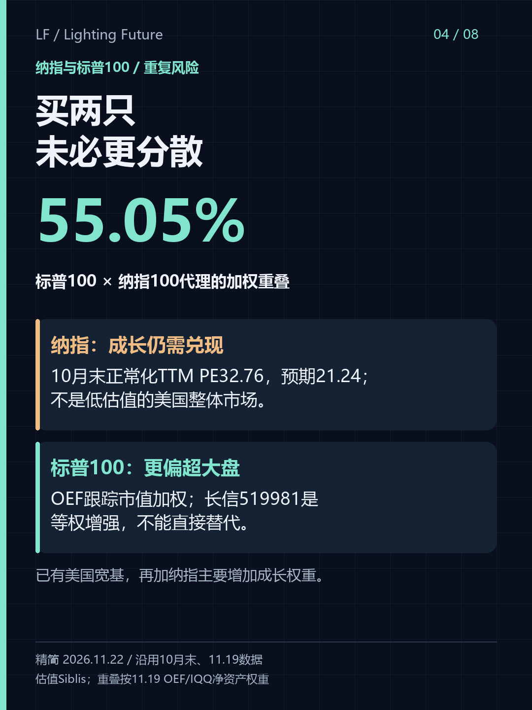
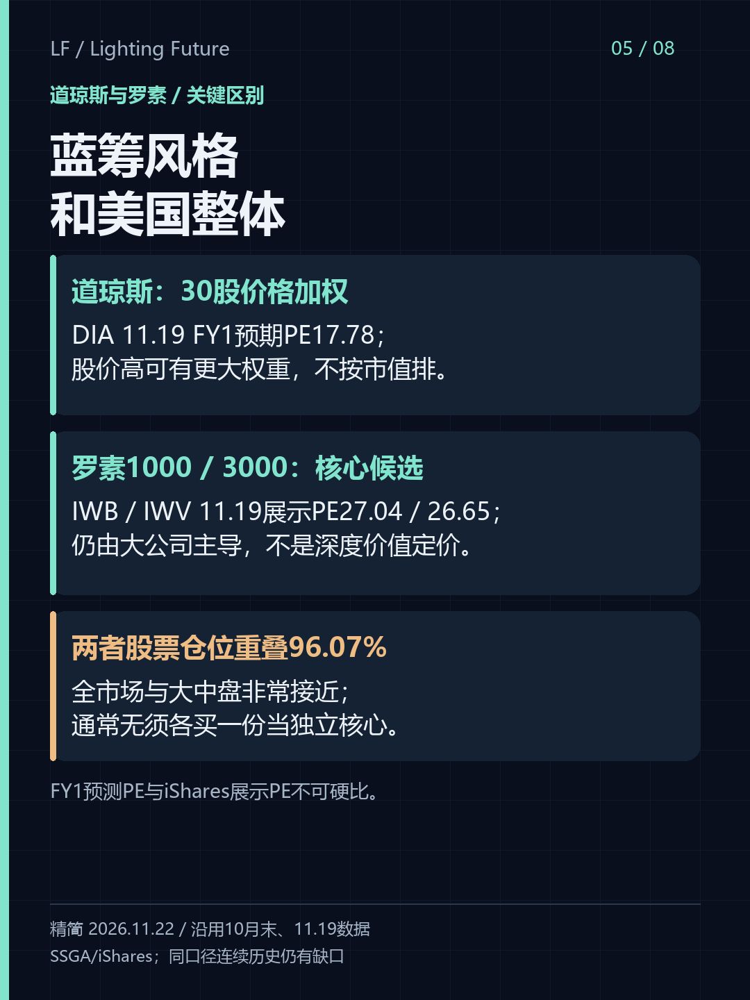
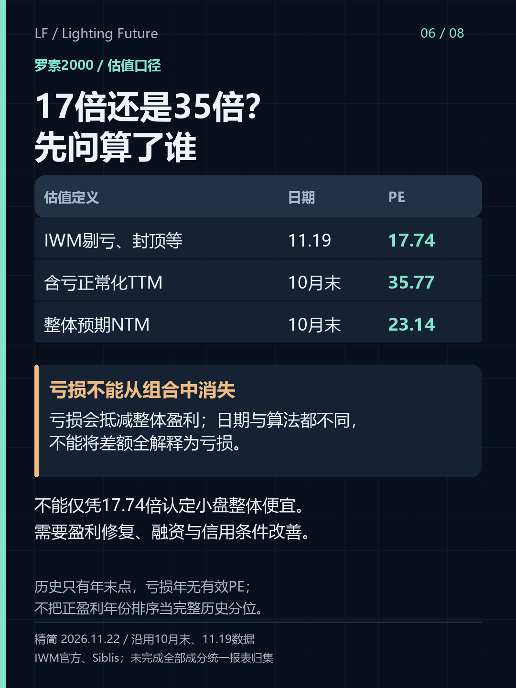
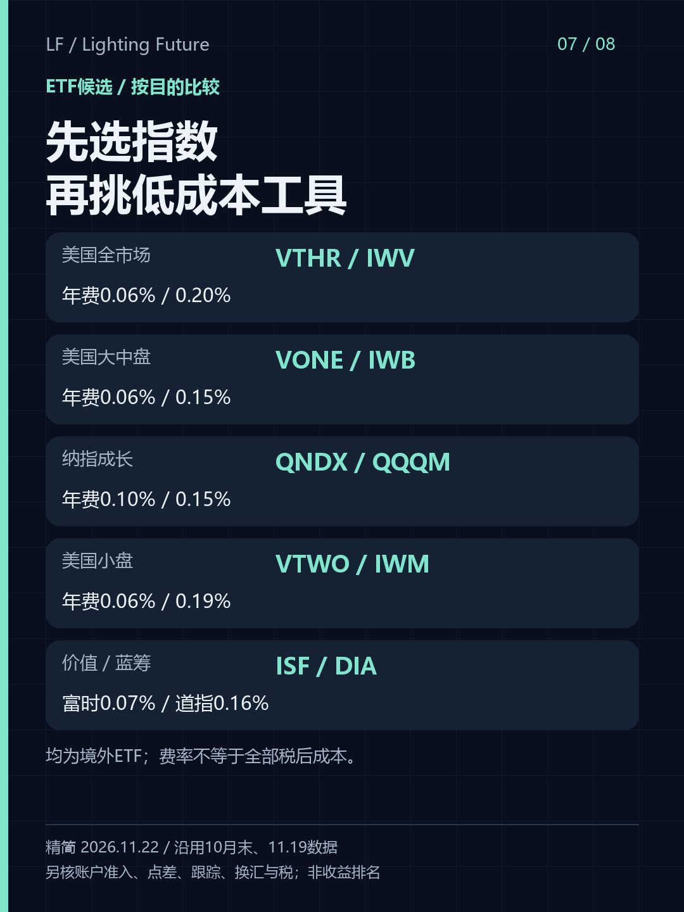
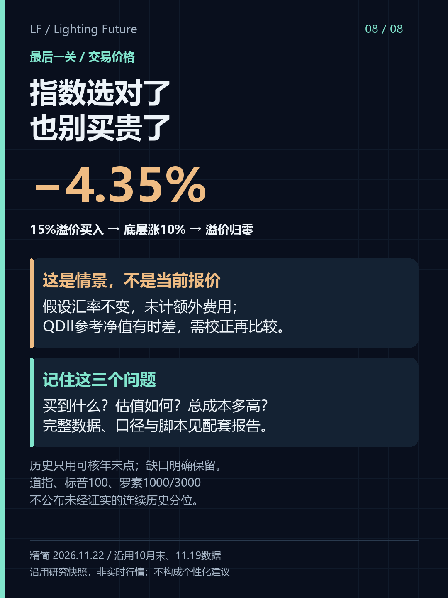

01 / 封面下载PNG ↓
1张封面＋7张正文图 · 8页核心版 · 1080 × 1440 PNG · 点击图片放大查看
2026/11/22压缩为8页；配套完整研究v1.1。沿用10月末与11/19分口径快照，历史只有年末点，非实时行情。








英美宽基这么多，抓住这几点就够了： ① 美国核心，先比较罗素3000/1000等全市场或大中盘。全市场仍由大公司主导，不必把相似宽基都买一遍。 ② 纳指是成长倾斜，标普100偏超大盘；两只代理11/19加权重叠55.05%。 ③ 富时相对海外样本便宜，但自身近5个年末估值并非低位；道指是价格加权蓝筹，不等于美国整体。 ④ 罗素2000的剔亏PE不代表整体便宜，先核亏损、盈利修复和融资条件。 ⑤ 选好指数，还要防高溢价：15%溢价买入、底层涨10%、溢价归零，汇率不变且未计额外费用，仍亏4.35%。 图内列了ETF候选。费率之外，还看点差、税、换汇与真实跟踪。 估值沿用2026年10月末/11月19日分口径快照，非实时行情；历史仅年末样本，缺口不编分位。8页精简于11/22，个人研究，非个性化建议。 #ETF研究 #美股宽基 #富时100 #纳斯达克100 #道琼斯 #罗素2000 #估值分析
未自动发布到小红书。年末样本不等于连续分位；9个跨市场参照不是全球分位。请保留图片脚注。